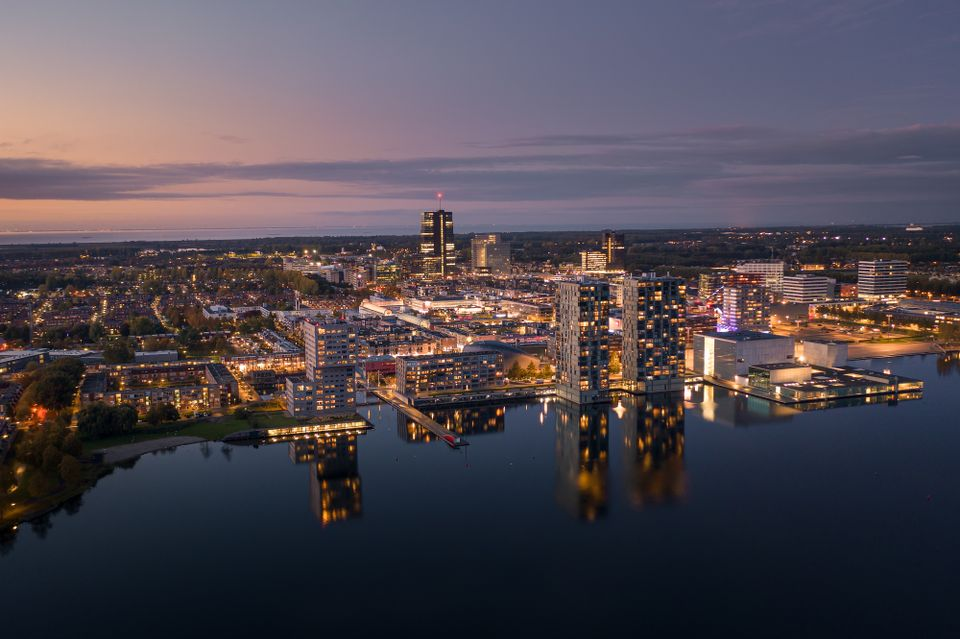

Almere, gelegen in de provincie Flevoland, is een stad die bekend staat om haar moderniteit en innovatie. Oorspronkelijk ontstaan als een polderstad in de jaren zeventig, heeft Almere zich ontwikkeld tot een levendige en snelgroeiende gemeenschap. Met zijn opvallende architectuur, ruime opzet en talloze groene gebieden, biedt Almere een unieke leefomgeving. De stad trekt niet alleen nieuwe inwoners aan, maar ook ondernemers en kunstenaars die worden aangetrokken door de mogelijkheden die deze dynamische stad te bieden heeft. Almere weerspiegelt een balans tussen stedelijk comfort en natuurlijke schoonheid, waardoor het een aantrekkelijke bestemming is voor mensen die op zoek zijn naar een eigentijdse levensstijl.
Almere, ook wel bekend als de 'jongste stad van Nederland', is een ware pionier op het gebied van stadsontwikkeling. Als onderdeel van de Zuiderzeewerken werd deze stad opgebouwd op voormalige Zuiderzeebodem en groeide snel uit tot een diverse en moderne samenleving. Met een mix van architectonische stijlen, van strakke moderne gebouwen tot knusse wijken, biedt Almere een gevarieerd landschap. Het uitgebreide netwerk van fietspaden en groene zones benadrukt de aandacht voor duurzaamheid en levenskwaliteit. Almere is niet alleen een plek om te wonen, maar ook een broedplaats voor creativiteit en vernieuwing, waar gemeenschapsgevoel en vooruitgang hand in hand gaan.